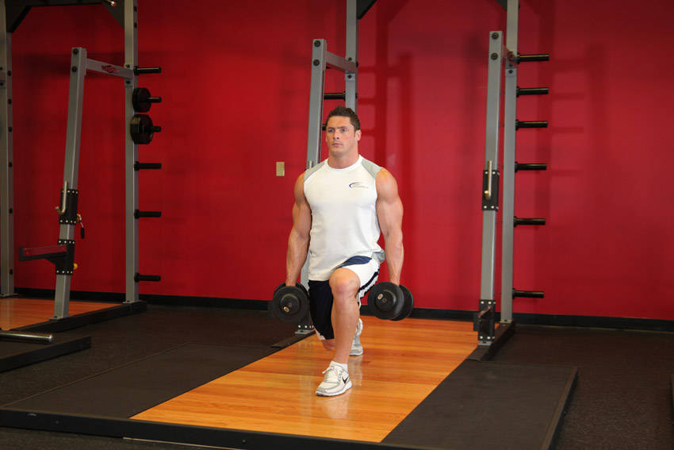

- Stand with your torso upright holding two dumbbells in your hands by your sides. This will be your starting position.
- Step backward with your right leg around two feet or so from the left foot and lower your upper body down, while keeping the torso upright and maintaining balance. Inhale as you go down. Tip: As in the other exercises, do not allow your knee to go forward beyond your toes as you come down, as this will put undue stress on the knee joint. Make sure that you keep your front shin perpendicular to the ground. Keep the torso upright during the lunge; flexible hip flexors are important. A long lunge emphasizes the Gluteus Maximus; a short lunge emphasizes Quadriceps.
- Push up and go back to the starting position as you exhale. Tip: Use the ball of your feet to push in order to accentuate the quadriceps. To focus on the glutes, press with your heels.
- Now repeat with the opposite leg.
This exercise appears in Programmd training programs. Take the quiz to find one for your gym.
Find your program